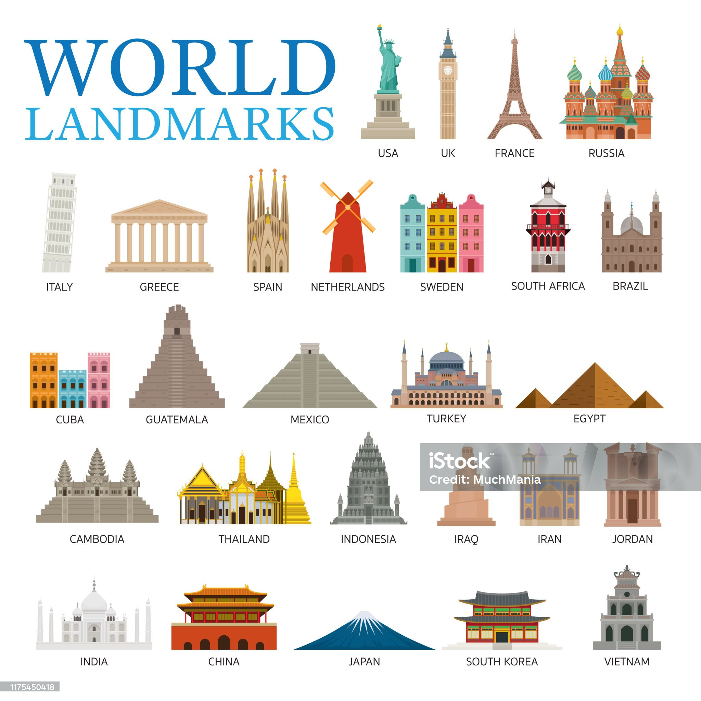

Introduction
Welcome to Travel Explorer, your ultimate guide to exploring the world's most exciting destinations. Whether you dream of relaxing on serene beaches, hiking in lush mountains, or immersing yourself in vibrant cultures, our blog offers expert travel tips, must-visit places, and insightful advice to make your journey unforgettable.
From breathtaking natural wonders to secret urban spots only locals know about, we aim to inspire every type of traveler. Our mission is to not just help you visit a place—but to truly experience it. With stories, photos, and insider guidance, Travel Explorer becomes your passport to the world.

Why Choose Us?
At Travel Explorer, we go beyond basic travel guides. Our content is created by passionate explorers who have lived the experiences they write about. Whether it's savoring street food in Vietnam, hiking glacier trails in Canada, or catching sunsets over the Aegean Sea, we bring you the real deal.
We also break down travel costs, suggest local hacks to save money, and showcase both iconic landmarks and underrated destinations. Our “Hidden Gems” section helps you escape the crowds and discover authentic experiences.
Our Mission
Travel Explorer is built on the belief that travel connects people. We want to help you break boundaries, make friends around the globe, and collect unforgettable memories. Travel isn't just about ticking places off a list—it's about feeling alive.
Whether you’re a solo traveler chasing adventure or a couple seeking romance, our curated guides and tips are here to ensure you make the most of every moment. Let’s explore the world, one journey at a time.